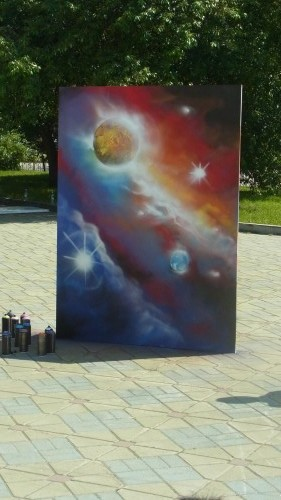

ICPC World Finals 2014 3日目
3日目 (2014/06/23)
今日は携帯のほうでアラームをかけておいたので、ちゃんと鳴って目が覚めた。
朝食を食べて、バスでКосмосへ移動。塩漬けの鮭があるのは相変わらずだけど、Light-saltedという概念が登場していて食べやすかった。
バスの中で、V.N. Karazin Kharkiv National Universityの人に話しかけられる。ICPC Quest（公式ページにあるお題に沿った写真を撮ってアップロードすると景品がもらえる）のタスクで、マスコットのUrfooと一緒に写真を撮らせて欲しいとのこと。特に断る理由もないので承諾する。
最初はIBMのTechTrek。Cognitive Computingというタイトルでテンションが上がる。
IBMだけあって、基本的にはWatsonの話で、人間と同じレベルの認知機能をもつコンピュータがあれば世の中もっと便利になるよね、Watsonは自然言語について、そういうコンピュータを実現したものなんだ、という感じの内容だった。コンピュータの認知機能が発展したら人間の意思決定の立場はどうなるのか？という質問に対しては、コンピュータはあくまでもデータを認知して集約するだけの役割で、最終的な意思決定は人間のものだというスタンスで答えていた。IBMの考えている方向性はだいたい自分の考えていることと同じっぽくて、すごく新鮮というわけではなかったけど、逆にIBMレベルのような最高レベルの研究所が言うのであれば、すごく間違っているということはないだろうと分かって、少し安心感がある。
TechTrekの後は昼食。外にテントが張ってあって、そこに出張ビュッフェがあって料理を取りに行く。日差しが強い中で長い列に並ぶ気がしなくて、先にアイスを食べていた。
けっこうおいしい。
ハンバーガー。
レクリエーションでグラフィティ・アートのプロが来て、吹きすさぶ風をものともせず絵を完成させていた。

外には色々遊ぶものが置いてあって、巨大チェッカーやラジコン、リアルAngry birdなどがあった。

結構難しい。
いつの間にかとこはるさんが、日系ブラジル人の女の子と仲良くなっていた。かなり日本語がうまくて驚く。
次のOpening Ceremonyまで結構暇なので、近くの教会っぽい建物に行ってみる。後で知ったが、これがChurch on Bloodらしい。
中はこういうのでよくある、肖像と宗教画が飾ってあって、お参りしたひとがロウソクを立てていく感じの施設だった。説明が全部ロシア語なのでまったく分からない。言葉が読めないのは不便だ……。
近くの公園に、変なベンチがあった。原爆で影だけ残った人みたい。こわい。
あと、エカテリンブルグにはあちこちに銅像が建っている。歴代の皇帝とか偉い人の銅像らしい。
結構暑かったこともあり、会場に戻ったらかなり疲れていた。Opening Ceremonyが始まるまで寝る。@gachizei_tcがICPC Questの写真を集めるためあちこち走り回りっているのに、上位陣に勝てる気がしないとこぼしていて闇を感じた。
Opening Ceremony開幕。最初はオーケストラの演奏。
次にエカテリンブルグのPVが流れる。冒頭ではネタを交えて笑いを取りつつ引き込んで、だんだん真面目な話にシフトしていくのがうまいなあと思った。
その後は出し物を挟みながら、偉い人の挨拶やチーム紹介、運営に携わっている人の表彰などが続く。
Wooden Spoonの演奏。本当に木のスプーンで、打ち合わせて打楽器として使う（写真だとうまく見えない……）。
司会のBill PoucherがWe have guests from futureと言い始めて、何を言ってるのかと思ったらロボットが出てきた。最初は本物かと思ったけど、異常に動きがきれいで、殴り合いも始めたので、さすがに人間だと気付いた。
ハードコアパンクのバンド。LEDを仕込んだドラムの上に水をまいて叩くことで飛沫を光らせる演出とかしていて、床を水浸しにしていてすごかった。
予定では2時間だったところ、延びに延びて3時間経ったところで終了。この時点で19時。
ホールの中で食事をしようとしたら、先客が多そうだったので迂回して他の場所に行ってみることにした。誘導されるままに歩いていったら、屋上のテラスに着いた。
夕食。ロシア餃子がおいしい。豚肉は相変わらず少し固い。

外に出てみたら、ダンスの実演が行われていた。眺めていたら@ria_raiくんが捕まり、流れで自分も参加することになった。
帰りのバスが来たのでホテルに戻る。着いたら21時。明日は7:50のバスに乗らないといけないので、6:30に起きようということになった。まじで……。